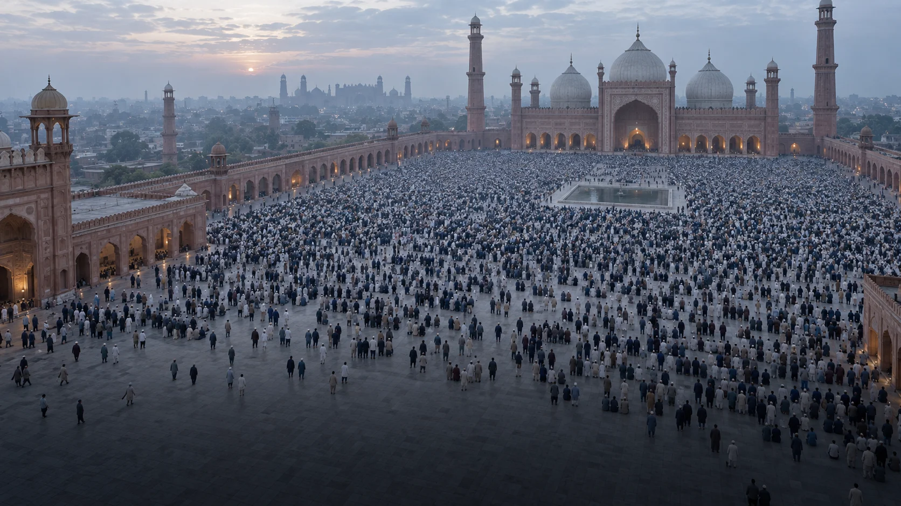

Equip the Church. Reach the nations.
Training, coaching, and activation for denominations and church networks reaching Muslims for Christ.
Illustrative image
A clear plan. A multiplying church.
Partner
We work with senior denominational leadership to plan an initiative across their churches.
Equip
Launch conferences, translated training, and MMWU prepare leaders to train others.
Activate
Coaching and WISE support churches in prayer, evangelism, and discipleship.
MMWU develops leaders. WADI offers free video training. WISE supports ministry coordination.
Tanzania · 16,000 churches mobilized
All 71 bishops of the Tanzania Assemblies of God agreed to run regional Every Muslim for Christ conferences.
Source: i2 Ministries’ published initiative report.
80 countries are waiting for a beginning.
i2 reports launches in 50 countries toward a target of 130. A country launch costs approximately $100,000.
Gifts help fund national launches, translated curriculum, scholarships, and ongoing coaching.